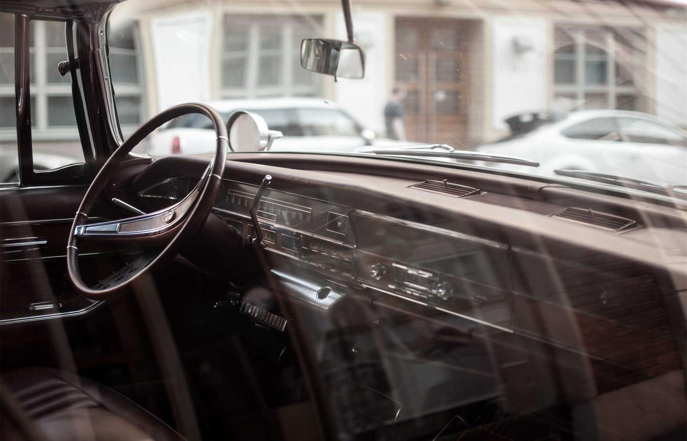

Исторический тур
Айя-София, Голубая мечеть, дворец Топкапы и прогулки по старому городу.
Собрали всё необходимое для поездки: идеи маршрутов, важные места, бюджет, полезные сервисы и ответы на частые вопросы.

Айя-София, Голубая мечеть, дворец Топкапы и прогулки по старому городу.

Круиз по Босфору, панорамные точки, закаты и атмосферные набережные.
Локальные рынки, турецкая кухня, кофе, сладости и уличная еда.
Европа и Азия в одном городе, между которыми легко перемещаться на паромах.
Даже короткая поездка даёт насыщенную программу: история, еда и современный ритм.
Метро, трамваи, автобусы и такси позволяют быстро добраться до главных локаций.
«Маршруты с сайта помогли увидеть главное и не тратить время на хаотичные перемещения.»
«Отдельно понравился блок с бюджетом: заранее понял, сколько закладывать на поездку.»
«Полезные контакты и карта сильно выручили, когда нужно было быстро сориентироваться.»